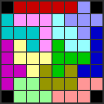
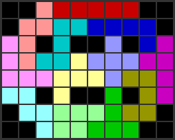
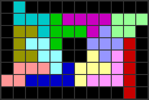

|  |
Pentominos Puzzle Solver
|
Solving a pentominos puzzle means placing all 12 pentominos, non-overlapping, in empty spaces on the board. (Or, if the board is too small to hold them all, as many as will fit.) The Pentominos Solver program applies a simple "recursive backtracking algorithm" to the problem. This means that it simply tries the pentominos in all possible orders, trying to fill the available spaces from left to right and from top to bottom. It keeps placing pieces as long as it finds one that fits in the next available spot. When it can't find a piece that fits in the next spot, it backs up and tries a different piece on the previous level.
{kind=link}
You can select the board size. The Size popup menu allows you to select from some typical board sizes. The "Custom" setting in that menu shows input boxes that allow you to set any number of rows and columns, within reasonable limits. A custom size takes effect when you press return in one of the input boxes, or when you leave the box by clicking elsewhere or by pressing tab.
If the board has more than 60 squares, or if the number of squares is not a multiple of five, then you can click some of the squares to make them black. (On a touch screen, you can touch the squares instead of clicking them.) Pentominos can't be placed in black squares. By using a large board and making a lot of black squares, you can make oddly shaped and even disconnected areas for the program to try to fill. For example:
 
The "Run" button will let the program work on the problem until it finds a solution, at a speed determined by the speed menu. The top entry in that menu, "Solutions Only / NO PAUSE", is special — the program will show the solutions that it finds, but it won't stop until it has checked every possibility and has found all the solutions. Use this top speed to count solutions. The second entry, "Run to next solution", does just that — it won't draw anything until it finds a solution or runs out of possibilities; when it does, it draws the solution and stops. For the other five speeds, the program shows every step in the solution process, and it stops when it finds a solution or runs out of possibilities to try. (You can change the speed while the program is running.)
Note that the number of moves that is reported by the program is the number of times that a piece was actually placed on the board. It doesn't include checking whether a piece will fit or removing a piece during backtracking.
About the "Check for Obvious Blocking" Option: Without this option, you will sometimes see that the program seems to be doing something stupid: You'll see an isolated group of one to four white squares where the program will never be able to place a pentomino, but the program will be chugging away trying to place pentominoes in other parts of the board. This is particularly obvious if you make a board with 3 rows and 20 columns, where the problem is so bad that I have never had the patience to wait for a solution to be found. (This is why there is a 20-by-3 board in the "Size" menu rather than a 3-by-20; the 20-by-3 board is solved very quickly.) If you turn on the "Check for Obvious Blocking" option, the program will check for blocking of this type every time it makes a move. (In fact, it checks for any white area whose size is not a multiple of five -- or an even more complicated check when you haven't selected the maximum number of black squares.) This option can greatly decrease the number of moves needed to find solutions. However, the test itself is fairly complicated and so the net computer time spent searching for solutions is in many cases not very different.
About the "Symmetry Check" Option: When this option is on, the idea is to ignore solutions that are simply reflections or rotations of other solutions. For some boards [before any pieces are added], when you rotate or reflect the board, it looks the same after the operation as it did before. This is called a "symmetry" of the board. There are seven possible symmetry operations: horizontal reflection, vertical reflection, rotation through 180 degrees, reflection through the descending diagonal, reflection though the ascending diagonal, rotation through 90 degrees, and rotation through 270 degrees. (The last four of these only apply to a square board.) If you have one solution of a symmetric board, then a symmetry operation will transform that solution into another solution. You might want to avoid counting this transformed solution as a separate solution. If you turn on the Symmetry Check option, that's what will happen: only one member of each set of symmetric solutions will be generated. To implement this, certain rotations and/or reflections of some pentomino are omitted from consideration. For example, consider a board that is symmetric under the two diagonal reflections and under rotation through 180 degrees, and not under the other symmetries. Consider the "T" shaped pentomino. This piece has four possible orientations. Any solution contains the "T" pentomino in one of these orientations and, if it does not contain the "T" in its upright orientation, can be transformed by one of the three symmetry operations into a solution that does. The Symmetry Check option removes three of the orientations of the "T" pentomino from consideration, leaving only the upright position. The only solutions that are generated are the ones that contain the "T" in this orientation. This includes exactly one solution from each set of four symmetric solutions. This option is probably useful mainly for counting solutions.
The technique used to implement the Symmetry Check option assumes that every piece will, in fact, be part of every solution. The program allows you to make boards that are too small to hold all the pieces. For those boards, my Symmetry check technique doesn't work. So, the Symmetry Check option is disabled for boards with fewer than 60 squares, which are too small to hold all 12 pentominos.